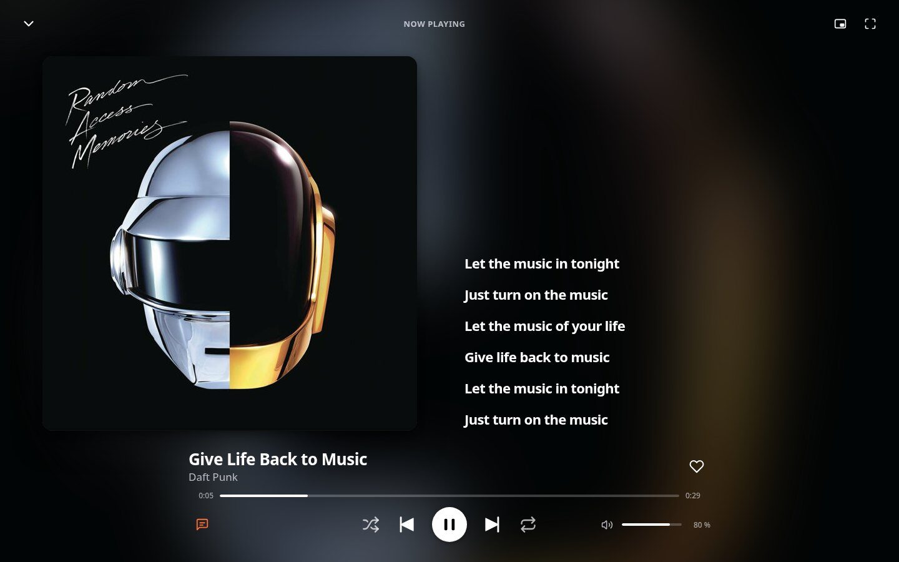
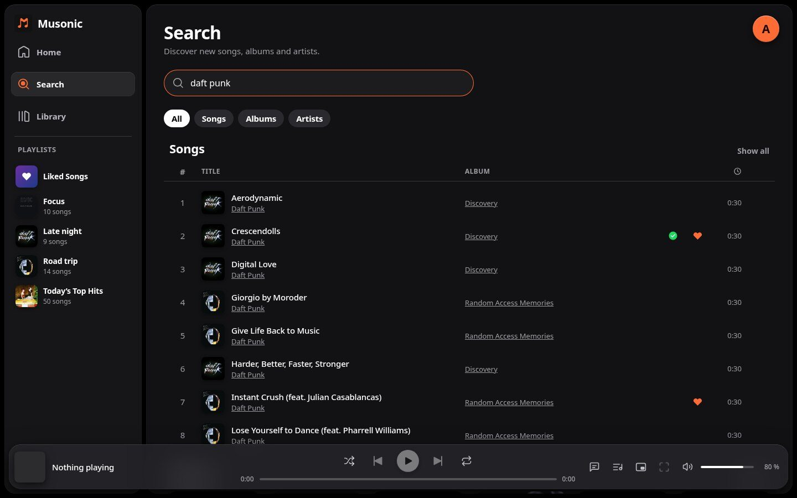
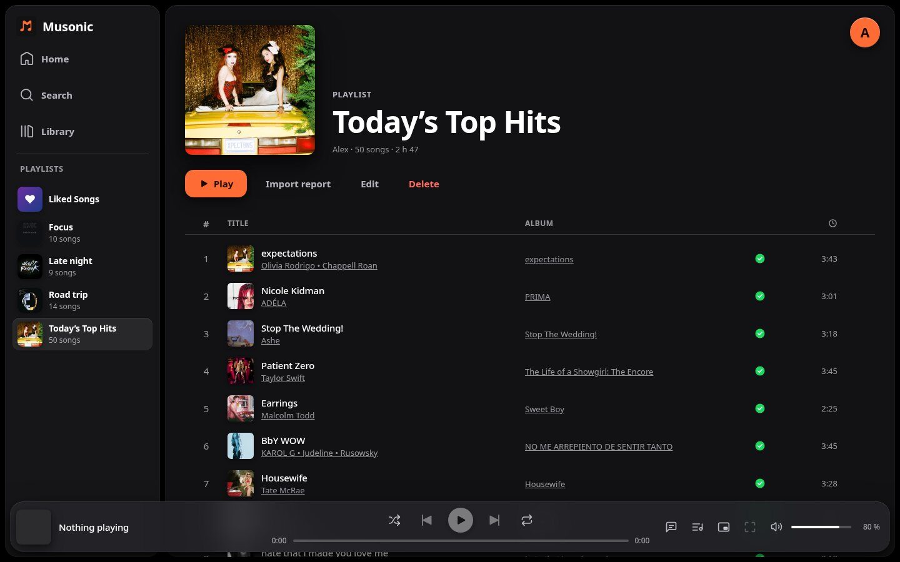
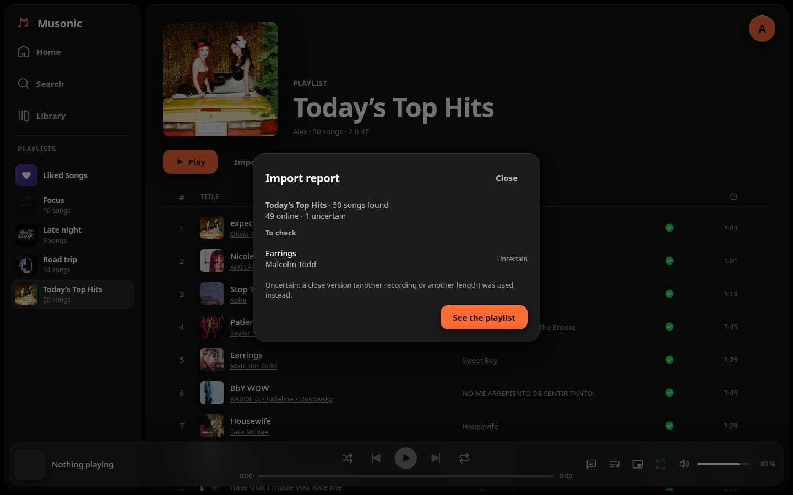
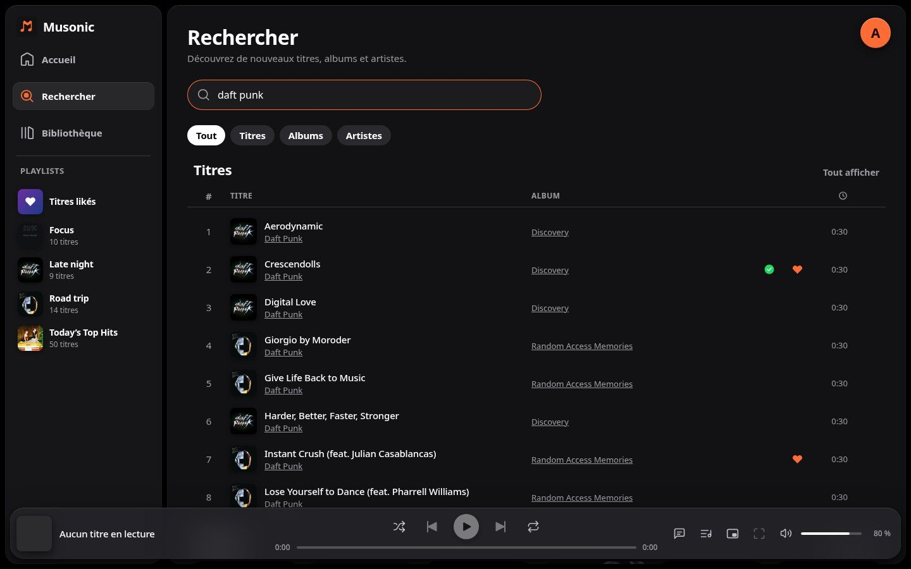
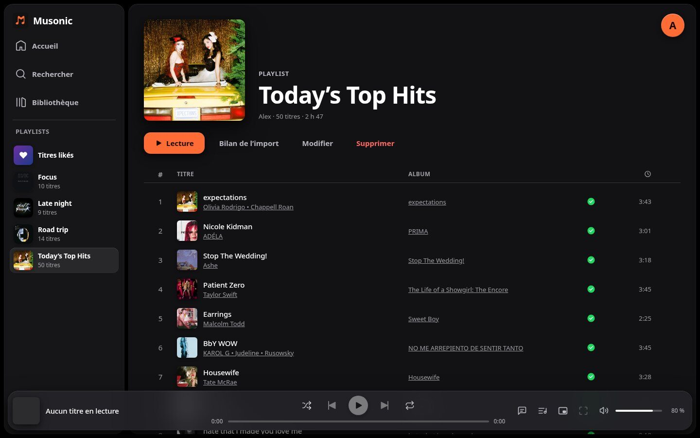

Web client · for your computerClient web · pour votre ordinateur
All of Musonic, in a tab.Tout Musonic, dans un onglet.
The same home, mixes, lyrics and playlists as on your phone, made for a big screen. Nothing to install: open it and sign in to your server. Le même accueil, les mêmes mix, paroles et playlists que sur votre téléphone, pensés pour un grand écran. Rien à installer : ouvrez-le et connectez-vous à votre serveur.
VersionVersion · Brave, Chrome, Edge recommendedBrave, Chrome, Edge conseillés


1Get startedCommencer
- Open musonic.doodz.dev/app on your computer.
- Enter your server's address, your username and your password.
- Tick Remember me on your own computer only: Musonic then keeps a sign-in token in this browser (it warns you first). Otherwise you are signed out when the tab closes.
- Ouvrez musonic.doodz.dev/app sur votre ordinateur.
- Entrez l'adresse de votre serveur, votre identifiant et votre mot de passe.
- Cochez Se souvenir de moi uniquement sur votre propre ordinateur : Musonic garde alors un jeton de connexion dans ce navigateur (il vous prévient d'abord). Sinon, vous êtes déconnecté à la fermeture de l'onglet.
Your password is never sent in clear: the web client signs in with a token derived from it, and talks only to your server.
Votre mot de passe n'est jamais envoyé en clair : le client web se connecte avec un jeton qui en est tiré, et ne parle qu'à votre serveur.
2What it doesCe qu'il fait
Home and Magic MixesAccueil et Mix Magiques
Quick access, recently played, favourite artists, « More like… », « Because you liked… », and eight Magic Mixes a day from your favourite genres.Accès rapide, écoutés récemment, artistes favoris, « Plus de… », « Parce que vous avez aimé… », et huit Mix Magiques par jour selon vos genres préférés.
Library and searchBibliothèque et recherche
Playlists with Liked Songs and My Music, albums, artists, play by genre; a search with endless results, and Browse: recently added, most played, random, by decade.Playlists avec Titres likés et Ma Musique, albums, artistes, lecture par genre ; une recherche aux résultats sans fin, et Parcourir : ajouts récents, plus écoutés, au hasard, par décennie.
The same playback engine as the appLe même moteur de lecture que l'app
Shuffle off / on / Magic, repeat, autoplay, Previous restarts after 3 seconds; a queue in zones you can reorder by drag and drop.Aléatoire désactivé / activé / Magique, répétition, lecture auto, Précédent redémarre après 3 secondes ; une file d'attente en zones, réordonnable par glisser-déposer.
Full-screen player and synced lyricsLecteur plein écran et paroles synchronisées
A blurred cover background, a large cover, lyrics beside it with the sung line highlighted; click a line to jump to it.Un fond de pochette floutée, une grande pochette, les paroles à côté avec la ligne chantée mise en valeur ; cliquez une ligne pour y aller.
Playlists your wayDes playlists à votre façon
A heart and a « + / ✓ » on each song, right click for every action, a box to add a song to several playlists, name and description shared with every client.Un cœur et un « + / ✓ » sur chaque titre, clic droit pour toutes les actions, une fenêtre pour ajouter un titre à plusieurs playlists, nom et description partagés avec tous les clients.
English and FrenchAnglais et français
The browser's language by default; your choice is shared with this website.La langue du navigateur par défaut ; votre choix est partagé avec ce site.
3Import a Spotify or Deezer playlistImporter une playlist Spotify ou Deezer
With Musonic Server, bring your playlists over: Library → Import, paste the playlist's address, check its name and cover, and import. It runs on the server, so you can close the window; the progress shows live.
Avec Musonic Server, rapatriez vos playlists : Bibliothèque → Importer, collez l'adresse de la playlist, vérifiez son nom et sa pochette, et importez. L'import tourne sur le serveur, vous pouvez donc fermer la fenêtre ; la progression s'affiche en direct.
- Each song is looked for in your library first: a song you already have is never downloaded again.
- Then in the online catalogue. A song found online joins the playlist and is imported as a file, as for any song you add.
- The report lists the uncertain songs (a close stand-in, such as another recording of the same piece) and the songs not found, with a button to look for them again.
- Spotify playlists are read up to their first 100 songs. For the rest, put them in a second Spotify playlist (select them, « Add to playlist » → « New playlist ») and paste its address in the report: they join the same playlist.
- Chaque titre est cherché d'abord dans votre bibliothèque : un titre que vous avez déjà n'est jamais retéléchargé.
- Puis dans le catalogue en ligne. Un titre trouvé en ligne entre dans la playlist et est importé en fichier, comme tout titre que vous ajoutez.
- Le bilan liste les titres incertains (une version proche, comme un autre enregistrement du même morceau) et les titres introuvables, avec un bouton pour les chercher à nouveau.
- Les playlists Spotify sont lues jusqu'à leurs 100 premiers titres. Pour le reste, mettez-les dans une deuxième playlist Spotify (sélectionnez-les, « Ajouter à la playlist » → « Nouvelle playlist ») et collez son adresse dans le bilan : ils rejoignent la même playlist.
How many songs are foundCombien de titres sont trouvés
| PlaylistPlaylist | FoundTrouvés | UncertainIncertains | Not foundIntrouvables |
|---|---|---|---|
| Pop and hits (250 songs)Pop et tubes (250 titres) | 98 % | 2 % | 0 % |
| Deezer chart (100 songs)Classement Deezer (100 titres) | 100 % | 0 % | 0 % |
| Electro swing (33 songs)Electro swing (33 titres) | 94 % | 0 % | 6 % |
| Classical music (100 songs)Musique classique (100 titres) | 73 % | 16 % | 11 % |
Measured on real playlists, October 2026. Classical pieces are often titled differently from one service to another, hence more stand-ins.Mesuré sur de vraies playlists, octobre 2026. Les œuvres classiques ont souvent des titres différents d'un service à l'autre, d'où plus de versions proches.
4Keyboard and mini playerClavier et mini-lecteur
| Space | Play / pauseLecture / pause |
| Ctrl + ← → | Previous / next songTitre précédent / suivant |
| Media keysTouches multimédia | Also the desktop's media controls.Ainsi que les contrôles multimédia du bureau. |
| Esc | Close the full-screen playerFermer le lecteur plein écran |
The floating mini player stays on top of every window, even when the browser is minimized. Its layout follows its size: one thin line, or a large view with like and the next song.
Le mini-lecteur flottant reste au-dessus de toutes les fenêtres, même navigateur réduit. Sa mise en page suit sa taille : une fine ligne, ou une grande vue avec le like et le titre suivant.
5Browsers and serversNavigateurs et serveurs
- Brave, Chrome or Edge recommended: the floating mini player needs them. Firefox and Safari play everything else.
- Made for a computer. On a phone, use the mobile app.
- The online version can reach servers that allow it (CORS) over
https://: Musonic Server and Navidrome do. - Importing playlists and the other extras need Musonic Server; with Navidrome or another Subsonic server, the rest works.
- Brave, Chrome ou Edge conseillés : le mini-lecteur flottant en a besoin. Firefox et Safari lisent tout le reste.
- Pensé pour l'ordinateur. Sur téléphone, utilisez l'application mobile.
- La version en ligne peut joindre les serveurs qui l'autorisent (CORS) en
https://: Musonic Server et Navidrome le font. - L'import de playlists et les autres extras demandent Musonic Server ; avec Navidrome ou un autre serveur Subsonic, le reste fonctionne.
6Host it yourselfL'héberger vous-même
Prefer your own address? Two ways:
Vous préférez votre propre adresse ? Deux façons :
- With Musonic Server: one click in its console (Settings → Musonic Web) installs the latest version at
your-server/app, already set to connect to it. - On any web server: download
Musonic-Web.zipand follow its self-hosting guide.
- Avec Musonic Server : un clic dans sa console (Réglages → Musonic Web) installe la dernière version à
votre-serveur/app, déjà réglée pour s'y connecter. - Sur n'importe quel serveur web : téléchargez
Musonic-Web.zipet suivez son guide d'auto-hébergement.
What changed in each versionCe qui a changé à chaque version
7ScreenshotsCaptures
Click a screenshot to see it full screen.
Cliquez sur une capture pour la voir en plein écran.







